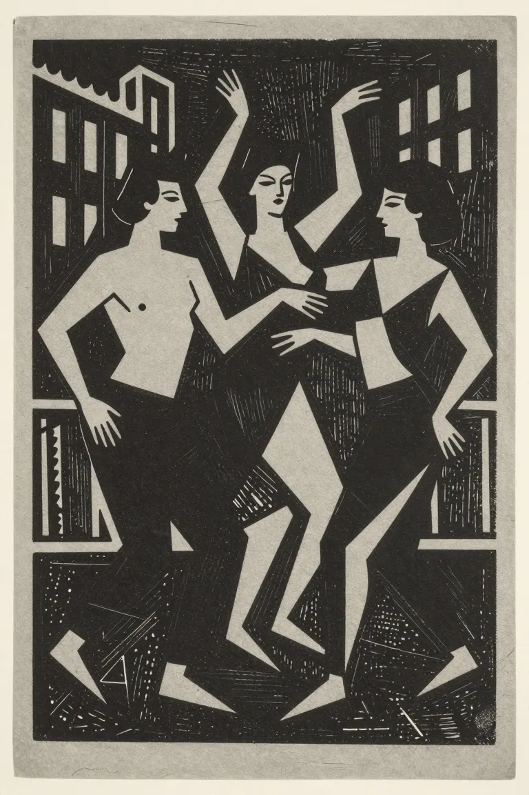

Доски режут несколькими смелыми ударами стамески, оставляя на виду волокно и следы реза. Художники часто печатают вручную на дешёвой бумаге, ложкой или прессом. Краска ложится неровно: плоские чёрные массы и резкие угловатые белые.

Главная идея
Доска, вырезанная несколькими жёсткими ударами и отпечатанная вручную, хранит рез и волокно. Оттиск показывает сырое внутреннее состояние, а не чистую картинку.
Принципы дизайна
Режьте прямо по мягкой доске ножом и стамеской; не рисуйте сначала картину в тонких деталях.
Сохраняйте волокно доски и следы стамески в оттиске.
Печатайте плоские чёрные массы против резких угловатых белых форм.
Добавляйте цвет второй или третьей доской кроющими красками, например красной и жёлтой, со сдвигом приводки 1–3 мм.
Печатайте вручную ложкой или малым прессом, чтобы краска покрывала лист неравномерно.
Берите дешёвую тонкую бумагу и позвольте следам притирания проступить на обороте.